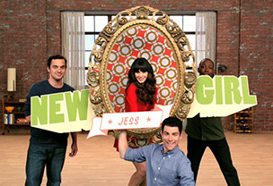
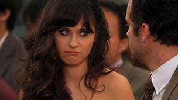

New Girl
A hilarious TV show revolved around four crazy roomates who live in San Fransisco.
Premiering in 2011, NEW GIRL was an instant hit, as viewers were introduced to the free-spirited Jess who, after a bad break-up, moved into a downtown Los Angeles loft occupied by three single guys. Among her new roommates, Jess had an immediate connection with Nick, a law school dropout-turned-bartender who knows he's not living up to his potential – yet. Winston, a former pro basketball player (in Europe), who returned to the loft not knowing what to do with his life, has done his best to adjust to working the night shift at a sports-radio station. Rounding out the loft, but living in his own universe, is Schmidt, whose over-confidence and well-defined physique mask severe insecurities, which manifest themselves in a number of OCD-like mannerisms, false bravado and contributions to the loft's douchebag jar. Providing an outsider's perspective on the loft's dynamics is Jess' childhood best friend, Cece, a model with a killer deadpan, whose on-again-off-again relationship with Schmidt keeps surprising everyone, most of all, herself.
Now in its third season, Jess and Nick have gone “all-in” on their relationship, but have realized that loving and living together is not as perfect as they hoped it would be. Schmidt found himself unable to commit to Cece, a decision he quickly regretted when he realized he broke her heart. Meanwhile unlucky-in-love Winston developed a too-close attachment with the roommates' new house cat, and the gang reconnected with Coach, who moved back into the loft when Schmidt relocated to the apartment next door.